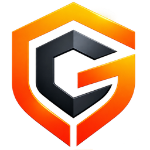

A four-milestone Stellar Community Fund #46 plan where every tranche is tied to an artifact a stranger can verify. Requested — not awarded. $0 received.

M1
First milestone tranche — production hardening and the XDR/CAP audit tool slice
REQUESTED · NOT AWARDEDM2–M3
Integrations, external pilot and independent review readiness
REQUESTED · NOT AWARDEDM4
Scale-out, SDK stabilisation and ecosystem launch
REQUESTED · NOT AWARDEDTotal requested $150,000 · received $0. Each tranche is released only after its artifacts are public and re-derivable. Full milestone detail: SCF #46 application.
mainnets live (Core DAO · Stellar)
machine-pinned tests
external report rows
revenue claimed — honesty is the product
An outside payments team (AgentBadge, buidl25) ran the VAR/1 pilot kit on a machine that had never touched it: 15/15 rows, exit 0, run twice, byte-identical seeded receipt. Their public report also names one disagreeing row (same-outDir rerun).
rows · exit 0 · run twice
seeded runs · byte-identical
disagreeing row · reported
runtime outside our set
Scope: an independent technical reproduction by an outside payments team (AgentBadge); not an AER-1 trial — not a commercial pilot, customer, partnership, audit or endorsement. VERIFIED ≠ SAFE.
Requested funding is not awarded funding. No signed commercial pilot yet; no third-party audit completed. VERIFIED ≠ SAFE.